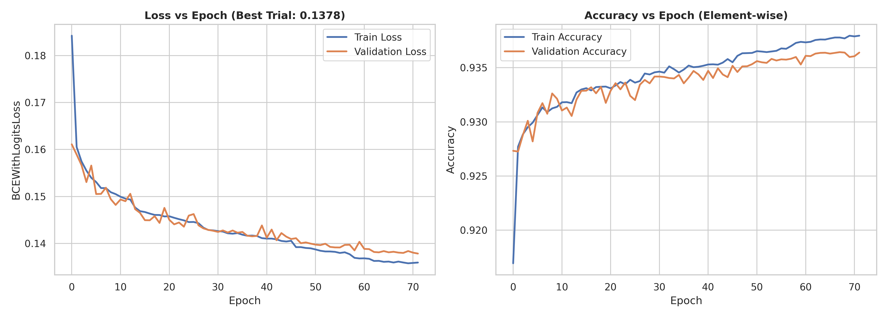
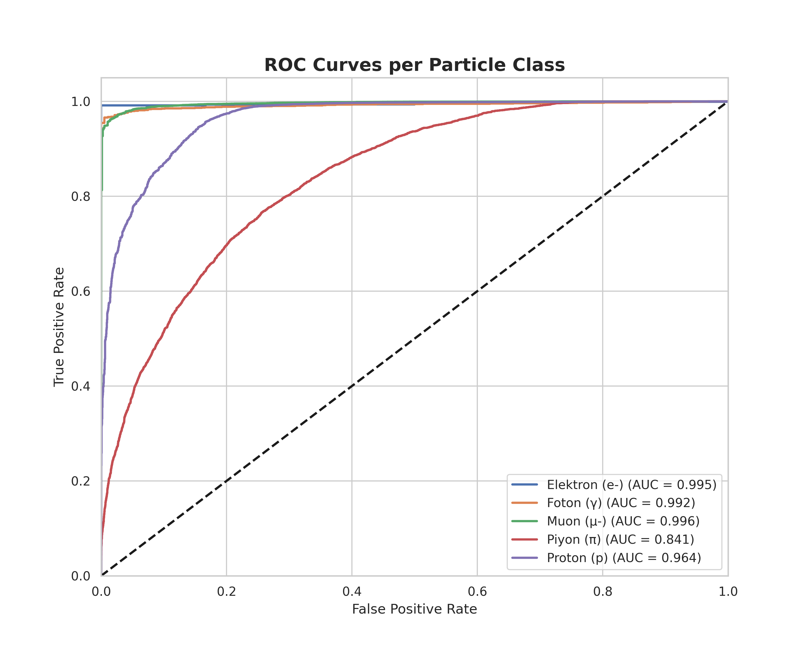
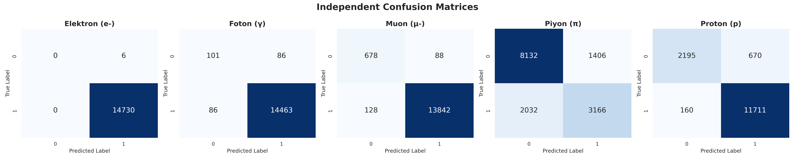

LArTPC Detector Simulation &
Multiple Particle Identification (MPID) CNN
This dashboard presents a physical Geant4 simulation of a MicroBooNE-like Liquid Argon Time Projection Chamber (LArTPC) and the results of a multi-label Convolutional Neural Network (CNN) optimized via Optuna Bayesian search.
LArTPC Detector Simulation
Liquid Argon Time Projection Chambers (LArTPC) detect particles when ionization electrons created along their paths drift under an electric field to **anode wire planes (U, V, Y)**. The induced signals form 2D wire-vs-time images. Below, you can interactively simulate particle tracks, charge drift, and see real-time 2D readouts.
U Induction Plane
Angle: +60° | 2400 Wires
V Induction Plane
Angle: -60° | 2400 Wires
Y Collection Plane
Angle: 0° | 3456 Wires
CNN Model & Training Results
The raw 800x800 wire plane readouts are processed using a **Smart Vertex Crop** algorithm, reducing them to 3-channel (RGB-like) 512x512 matrices before training. Optuna Bayesian optimization was utilized to discover the best hyperparameters.
Dataset Details
Best Hyperparameters (Optuna)
Class-wise Performance Report (Classification Report)
| Particle Class | Precision | Recall | F1-Score | Support (Test Set) |
|---|---|---|---|---|
| Electron (e-) | 1.00 | 1.00 | 1.00 | 14,730 |
| Photon (γ) | 0.99 | 0.99 | 0.99 | 14,549 |
| Muon (μ-) | 0.99 | 0.99 | 0.99 | 13,970 |
| Pion (π) | 0.69 | 0.61 | 0.65 | 5,198 |
| Proton (p) | 0.95 | 0.99 | 0.97 | 11,871 |
| Macro Average | 0.93 | 0.92 | 0.92 | 60,318 |
| Micro Average | 0.96 | 0.96 | 0.96 | 60,318 |



Literature & Source Codes
Scientific references and architectural details of the Geant4 simulation model.
A Convolutional Neural Network for Multiple Particle Identification in the MicroBooNE Liquid Argon Time Projection Chamber
This publication introduces the first multi-label convolutional neural network (MPID) framework designed to identify particle types (e-, γ, μ-, π, p) from raw 2D wire projection readouts in the MicroBooNE LArTPC detector, demonstrating high reconstruction efficiency on multiple overlapping event structures.
Geant4 LArTPC Detector Simulation
The dataset was compiled using a custom Geant4 C++ detector simulation model. Key architectural classes include:
- DetectorConstruction.cc: Defines the cryostat wall parameters and the $256 \times 233 \times 1037\text{ cm}$ active liquid argon volume.
- LArSensitiveDetector.cc: Captures ionization energy deposit hits.
- WireImageWriter.cc: Rotates and projects the 3D track positions onto the three wire angles (U: +60°, V: -60°, Y: 0°) to compile 800x800 matrices.
- PhysicsList.cc: Configures G4OpticalPhysics and standard electromagnetic/hadron processes.